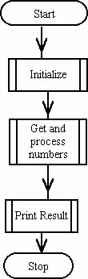
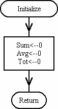
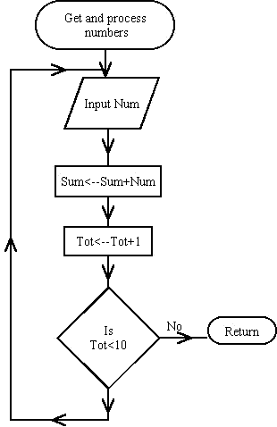
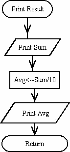

S.I.Blinnikov 1
1 Institute for Theoretical and Experimental Physics (ITEP, KKTPh), 117218, Moscow, Russia
Introduction
More on Motivation
Input language format
The tree structure of the program design
A Nontrivial Example
Reserved words
Diagnostics
Building Trefor
Introduction
Trefor is the text processor for program design, the main feature distinguishing it among other preprocessors being its ability to keep the structure not only of the code itself but also of the process of the construction, of the creation of a program. Using Trefor you save the history of the stepwise refinement of the code design in the same file which you submit to further compilation and then to run. The graph of the process of the stepwise refinement, described in many manuals on the structured programming, is actually a "Tree" (in the sense of the Graph Theory). This Tree is saved in your file by a special notation, bookkeeping the nodes of the tree and the paths connecting them. The excessive information introduced thereby helps you a lot not only in the process of the design, but also at the stage of testing and then in supporting and modifying the old codes.
Trefor is extensively used in several institutes in USSR and Russia since 1983 and it has withstood the test of time. Originally it was developed for Fortran (Trefor = Tree Fortran), but now it is used also for C, C++, REXX, Pascal, etc.
The origin of the Trefor goes back to the ideas developed mainly by E.W. Dijkstra and his colleagues, see the books:
- 1.
- Structured programming, O.-J. Dahl, E. W. Dijkstra & C. A. R. Hoare. London, New York, Academic Press, 1972.
- 2.
- Dijkstra, E. W. A discipline of programming. Englewood Cliffs, N.J. : Prentice-Hall, 1976.
- 3.
- Wirth, N. Algorithmen und Datenstrukturen. Stuttgart : Teubner, 1975.
- 4.
- Wirth, N. Algorithms + data structures=programs. Englewood Cliffs, N.J. : Prentice-Hall, 1976.
- 5.
- Gries, D., The science of programming. New York : Springer-Verlag, 1983.
Motivation for need of a special preprocessor comes from two sources. The first is a need to manage a huge code with loops like (DERIVED FROM HARWELL LIBRARY ROUTINE MA30A ):
C
C **********************************************
C **** START OF MAIN ELIMINATION LOOP ****
C **********************************************
C
DO 178 PIVOT = ISTART, ILAST
...
when the end of the loop comes 600 lines of the code later
... 178 CONTINUE C C ******************************************** C **** END OF MAIN ELIMINATION LOOP **** C ********************************************
Another source for the motivation of the Trefor development was the necessity to transform algorithms written in pseudocodes into a machine readable form automatically.
More on Motivation
Nowadays one can find on the Web many examples and tutorials on Structured programming concepts. Here we present a very simple example taken from www.netvista.com/ssingh/vb_notes/session1/stprog.html
Topics covered-
- Importance of a structured program
- Top down approach, example
Why is structuring of a program important?
| Structuring a program helps to break it down into understandable chunks. | |
| Structuring a program can help in easier debugging and maintenance of the program, as the amount of details that the programmer has to understand for any one module is less than dealing with the system as a whole. | |
| Modifications or enhancements to a program become much easier due to modular approach and better readability. |
Top down approach - Structured programming results in top-down approach with a hierarchy of levels. The modules at each level are completely independent, so that they can be handled separately. In this kind of approach, the program is first designed in outline. The outline design gives a skeletal form of a program. Every working program consists of three modules in sequence -
1. Initialization routine for initializing variables, opening files etc.
2. Main body of a program to perform actual processing.
3. Termination routine where all tidy up procedures, closing files and printing of totals and summaries is carried out.
Given below is a flow chart of a program, which will explain what is structured programming and top-down approach.
This is a flow chart for a program, which accepts 10 numbers from a user and prints their sum and average.




End of the example from www.netvista.com/ssingh/vb_notes/session1/stprog.html
Flowcharts are very useful for understanding, but in real life the programmers, sitting in front of their terminals, do not draw them, they just want to type their working codes as fast as possible. Trefor allows you to preserve the advantages of having a flow chart when you are already typing your algorithm in the process of its design. We explain this rewriting in the Trefor language the example which is given above as a set of flowcharts.
program numbers;
integer Tot;
real Num, Sum, Avg;
<*ini: Initialize *>
<*get: Get and process numbers *>
<*print: Print Results *>
stop;
end;
%_ini:
Sum=0.;
Avg=0.;
Tot=0;
%_get:
_repeat
<*input: Input Num *>
Sum=Sum+Num;
Tot=Tot+1;
_until Tot==10;
%_get_input:
read(*,*) Num;
%_print:
write(*,*)' Sum=',Sum;
Avg=Sum/10.;
write(*,*)' Avg=',Avg;
That's it. After feeding this script to the Trefor preprocessor we get a fully workable
Fortran code, while all two-dimensional structure contained in flowcharts is preserved.
We do not need here a design for "start" and "return" statements.
While designing a code in Trefor you just type in an appropriate
place (most convenient for you) some special combinations of symbols
which save the structure of the code. So the "flow chart" of the
code is saved in the code itself, automatically adjusting to any
changes which you might wish to introduce later.
We call such a code a "design tree".
More formal definitions are given below, but here we give just the
main idea.
At any place of the code, where one might draw a node in a flowchart (all those squares, rhombuses, triangles etc...) we just type
<*index: any explanatory text *>
and then continue with standard Fortran (or C, etc.) text. At some moment, when we are ready to refine what is going on in the node with our "index", we type:
%_ind1_ind2..._index:
where "ind1", "ind2", ... are the nodes in which our node is embedded, and so we formally introduce the stepwise refinement.
There are also other features, making Trefor convenient for writing long and complicated codes: macros, alias names, special structure constructions etc...
The original version of the Trefor was designed in 1983 by Sergei Weinstein (CNIIKA, Moscow, USSR, now retired from Parametric Technology, Haifa, Israel) and coded by Sergei Blinnikov (ITEP, Moscow, USSR) in Fortran-IV (more primitive than Fortran-77). Some features like alias definitions were added later by S.Blinnikov and O.Bartunov together with several versions of wrappers for different OS. A C-version of the Trefor compiler was coded by Vlad Popolitov (then at SAI, Moscow, Russia). One should note that the original Trefor (actually Fortran) version of the preprocessor is more robust and virtually free of bugs, while the C-version (which is coded directly, not using the preprocessor) sometime may encounter problems on huge input files (on order of 104 lines of code). Some improvemenst to MS Windows version have been supplied by Yaroslav Urzhumov. The latest version, btrefor95 and t95, developed by S.Blinnikov in 2012, is aimed at Fortran90/95 and more recent versions of Fortran language.
Input language format
To tell to the preprocessor, which language you wish to process just type (in the text of the Trefor-program):
_Fortran
or
_REXX
_Pascal
_C
etc. You may use the mixture of different languages in one file, if you wish it for some reason. If you type
_Trefor
you return to the standard Trefor environment, i.e., the preprocessor is prepared to output Fortran text, and the input is to be in the format where all operators are written from any column you like, but they should be delimited by ";", and the labels should be delimited by ":". The _Trefor regime is assumed as default in the beginning of any file submitted to the preprocessor.
Example 1.1
Pure Fortran text in input:
- - - - - - - - - - - - - - - - - - - - - - - - -
_FORTRAN
IF(A.GT.B)THEN
DO 25 I=1,N
Y(I,J)=Y(I,J)+Y(I,J+1)
25 CONTINUE
ENDIF
- - - - - - - - - - - - - - - - - - - - - - - - -
Then the output is almost the same: only one comment is added:
- - - - - - - - - - - - - - - - - - - - - - - - -
- - - - - - - - - - - - - - - - - - - - - - - - -C->Fortran section begins.... IF(A.GT.B)THEN DO 25 I=1,N Y(I,J)=Y(I,J)+Y(I,J+1) 25 CONTINUE ENDIF
Example 1.2
A bit less trivial is the next input text:
- - - - - - - - - - - - - - - - - - - - - - - - -
_FORTRAN
IF(A>B)THEN
_Do I=1,N
Y(I,J)=Y(I,J)+Y(I,J+1)
_od
ENDIF
- - - - - - - - - - - - - - - - - - - - - - - - -
Here you may use " > " instead of ".GT." and the "_Do_od" loop (the label is generated by the preprocessor), then the output is:
- - - - - - - - - - - - - - - - - - - - - - - - -
- - - - - - - - - - - - - - - - - - - - - - - - -C->Fortran section begins.... IF(A.GT.B)THEN DO 32757 I=1,N Y(I,J)=Y(I,J)+Y(I,J+1) 32757 CONTINUE ENDIF
The preprocessor generates labels in decreasing order starting from the initial value which may be changed at the installation. The standard starting value is below 32767 for compatibility with some old translators. You should not use your explicit labels in the range (30000-32767) but actually, using the Trefor, you need explicit labels very rarely.
Example 1.3
If you omit the word _Fortran in the beginning of the file, or if you type _Trefor in any place of the text, then the same piece may be typed from the first column, but you should then use ";" at the ends of Fortran operators:
- - - - - - - - - - - - - - - - - - - - - - - - -
- - - - - - - - - - - - - - - - - - - - - - - - -IF(A>B)THEN; _Do I=1,N; Y(I,J)=Y(I,J)+Y(I,J+1); _od; ENDIF;
The semicolon may be omitted before and/or after the closing "_od", so the next text is equivalent to the last one:
- - - - - - - - - - - - - - - - - - - - - - - - -
- - - - - - - - - - - - - - - - - - - - - - - - -IF(A>B)THEN; _Do I=1,N; Y(I,J)=Y(I,J)+Y(I,J+1) _od ENDIF;
Hereafter we use the _Trefor input format in our examples, as the most suitable for the design of complex codes.
The tree structure of the program design
Here we give some definitions, but they are not quite formal,
and the best way to understand the way of writing codes in
Trefor is to read carefully our Example 2.1.
DESIGN TREE
- :: =
- the sequence of a ROOT NODE and of its CHILD NODEs
- :: =
- NODE TEXT
- :: =
- NODE HEADLINE and the NODE TEXT. A node may have no children. If the root node has no children, then the whole code is presented in the form usual for standard languages, without additional information on the code structure
- :: =
- the sequence of TERMINAL TEXT segments and/or COMMENTS and/or DESIGN REQUESTs and/or DEFINITIONS for macros and aliases
- :: =
- %GLOBAL_INDEX: where "%" is typed in the first column. So the percent sign is reserved as an escape symbol only here: in any other position in the text you may use "%" if you need it
- :: =
- text in the language you use, ALIASes and some RESERVED WORDs. In _Fortran and _Trefor input also the symbols given below with their Fortran equivalents
| ^ | .NOT. |
| & | .AND. |
| ! | .OR. |
| = = | .EQ. |
| ^ = | .NE. |
| < > | .NE. |
| > | .GT. |
| < | .LT. |
| > = | .GE. |
| ^ < | .GE. |
| < = | .LE. |
| ^ > | .LE. |
Of course, you may use any form (old or new) you wish
for these logical and relation notations
COMMENTS
- :: =
- `two minuses' and then the comment: -- any text to the end of the line (as in Ada). `Slash-asterisk' comment as in PL/1 or REXX: /* text */
- Here text may include many lines with nodes, other comments etc. This comment may be used several times within one line. You may use other comments in the language you use. E.g. in _Fortran input (but not in _Trefor) you may use "C" or "*" in the first column of the line. The language _C ascribes some special meaning to "--", so it may not be used as a comment: the preprocessor will understand this correctly if you type _C at the beginning of the C section
- :: =
- < *LOCAL INDEX: SPECIFICATION of the child node * > If the ":" is omitted or replaced by another symbol, then everything inside the `brackets' " < *" and "* > " is understood as a comment. If the closing "* > " is not met until the next node headline then the error diagnostics is issued
- :: =
- sequence of alphanumeric characters. The local index is "short" if it is only one letter or digit. The local index is "long" if it contains more than one character
- :: =
- text of any length, not containing the combination "* > "
- :: =
- concatenation of local indices on the path to the node.
Two delimiters are used here:
the underscore "_" shows that the next local index in the
concatenation is the long one (but of course everything
will be OK if it is in fact the short one);
the point "." shows that the next local index is short
and all other characters appearing in the concatenation
are understood as short local indices even if they are
not separated by any delimiters until there again appears
"_". This helps to write very long node headlines
in the huge complex codes using short local indexes.
The difference in their use is explained in examples
below
A Nontrivial Example
Here we want to solve a small problem: to find in SUM the sum of products, containing all combinations of exactly M different elements of an array X(1:N).
The _Trefor input file for actually working code
*** Top of File *************************************
*** End of File **************************************--$$ ----HERE BEGINS THE ROOT NODE----- --$$ Throughout this text the comments with "--$$" are just for --$$ HELP of Trefor. In actual design tree they are omitted without --$$ any loss of information on the algorithm --$$ PROGRAM SCOMB; /* On entry X(1:N)- the array of N real elements M - integer >0 On exit SUM is the sum of products of all combinations of M different elements of X */ --$$ this is the comment of PL1/REXX type <*Var: variables description *>; --$$ --$$ this is the request with local index "Var" --$$ <*Input: input N, M, and the values of X(1:N) *>; --$$ --$$ this is the request with local index "Input" --$$ /* abstract variable SET - the ordered set of indexes K(I): K(1) < K(2) < ...< K(M) Statement QS: SUM is the sum of products X(K(I)) for all { K(I)} == SET <=SET(CURRENT) */ <*1: make QS true for SET==SET(INITIAL) *>; --$$ local index 1 _While <*2: SET ^ = SET(FINAL) *> _Do <*3: find next SET keeping QS invariant *> _od; -- Here SET==SET(FINAL) and QS==. TRUE., that is -- sum contains all needed products of X(K(I)) WRITE(6,*)' N=',N,' M=',M,' SUM=', SUM; END; --$$ --- THE END OF THE ROOT NODE ----
%_Input: --$$ the previous line is the headline of a child node, "_" shows --$$ that alphanumeric sequence till the next "_" or "." or ":" --$$ is the one long local index --$$ Write(0,*)'Enter the array length N'; READ(5,*) N; Write(0,*)'Enter the number of elements in product M'; READ(5,*) M; Write(0,*)'Enter the array X(1:N)'; READ(5,*) (X(I),I=1,N);
%3: --$$ the previous line is the headline of another child node, the absence of --$$ "_" or the presence of "." tells that only one character is used --$$ as the local index, i.e. the local index is the short one. --$$ We begin the design from this node since at the moment it is --$$ not yet decided, what is the actual structure of the abstract --$$ variable SET, but we already can develop the algorithm --$$ <*A: find new SET , i.e. new { K(I) } *>; <*B: put in PRODCT the product of X(K(I)) *>; SUM = SUM + PRODCT
%3A: --$$ the previous line is the headline of the node with local index "A" --$$ requested in the node %3, the global index here is "3A" which is --$$ equivalent to "_3_A", or to "_3.A", or to ".3.A", or to "3.A", --$$ or to "3_A", but not to "_3A", since there is no request with --$$ the local index "3A" --$$ /* concrete presentation of SET: K(I) - array of integer M elements */ I=M; _While K(I)==N+I-M _Do I=I-1 _od; K(I)=K(I)+1; /* The next loop is valid only for Fortran-77 since for m==1 Fortran-66 executes Do-loop L=1,0 */ _Do L=1, M-1; K(I+L)=K(I)+L _od
%3B: PRODCT=1.D0; _Do I=1,M; PRODCT = PRODCT*X(K(I)) _od
%2: K(1) ^= N+1-M -- If K(1)==N+1-M all the K(I) reach their final value
%1: SUM=1.D0; -- !!! _Do I=1,M; K(I)=I; SUM=SUM*X(I); _od
%_Var: --$$ the design of any node may be done in any convenient place --$$ after the end of the requesting node, e.g. the description --$$ of variables may be done at the end of the design tree when --$$ you already know all the desired data structures --$$ Implicit real*8 (a-h,o-z); Parameter(NDIM=10000); - maximum dimension of arrays Real*8 X(NDIM), SUM, PRODCT; Integer K(NDIM),I,M,N,L;
If this file is scomb.trf and you type
trf -nfl scomb.trf
then you obtain the code scomb.f which may be submitted for translation to a Fortran compiler. Moreover you have a Trefor listing, scomb.lst, with detailed Trefor diagnostics.
If you type
trf scomb.trf
then you get an executable ("a.out" in Linux) if your .trfrc file is set up correctly.
Reserved words
All reserved words begin with the underscore sign "_". You may use upper, lower or mixed case typing them. The delimiter for a reserved word is any non-alphanumeric symbol (usually it is just a blank). Digits are ignored in reserved words and you may use them just for labeling, e.g.
_Fortran _FORTRAN77 _FoR66Tran
produce quite the same effect: telling the preprocessor that the input will be in the Fortran format, and nothing more.
Now we collect the reserved words for general case.
- - - - - - - - - - - - - - - - - - - - - - - - - - - -
Input/output format:
_Trefor (default)
_Fortran
_REXX
_Pascal
_C
The file produced after the processing (command trf -[options] Fname) will be
Fname.f
and you should change the extension .f to the language you are actually using if its not Fortran.
You may use _Pascal format with many languages with similar syntaxes (actually _REXX and _Pascal formats are the same from the point of view of the Trefor).
- - - - - - - - - - - - - - - - - - - - - - - - - - - - -
_Include Fname;
this is used to include other files written in the format declared. It is used to include the file
Fname.inc
where the file Fname.inc will be searched for in the alphabetical order on the accessed disks. The included file may contain other _include instructions.
_IncludeN Fname
is equivalent to _Include but the contents of included files is not printed in the Trefor listing.
- - - - - - - - - - - - - - - - - - - - - - - - - - - - - -
_Offprint
_Onprint
to switch off/on the output to the listing file.
- - - - - - - - - - - - - - - - - - - - - - - - - - - - - -
_Trace
This word will generate messages in the output file about leaving and entering the nodes. E.g.,
'- > Entering Node % _Var:'
' < - Leaving Node % _Input:'
If you type in the example of file Scomb Trefor:
_trace 'write(5,*)'
then you obtain in output the Fortran text:
- - - - - - - - - - - - - - - - - - - - - - - - - - - - - -
PROGRAMSCOMB
WRITE(5,*)'-> Entering Node % _Var:'
IMPLICITREAL*8(A-H,O-Z)
PARAMETER(NDIM=10000)
REAL*8X(NDIM),SUM,PRODCT
INTEGERK(NDIM),I,M,N,L
PARAMETER(PI=3.141592653589793D0)
WRITE(5,*)'<-Leaving Node % _Var:'
WRITE(5,*)'->Entering Node % _Input:'
Write(0,*)'Enter the array length N'
READ(5,*)N
Write(0,*)'Enter the number of elements in product M'
READ(5,*)M
Write(0,*)'Enter the array X(1:N)'
READ(5,*)(X(I),I=1,N)
WRITE(5,*)'<-Leaving Node % _Input:'
...
- - - - - - - - - - - - - - - - - - - - - - - - - - - - - -
So you may receive messages from executing program tracing the nodes. Of course, the first message about the node "% _Var:" does not allow to obtain correct Fortran code. To avoid this you just type "O"in the node head:
% _Var:O
where "O" is from "Offtrace". In the example considered you should also type
%2:O
Try not to do this and look to the output Fortran file after issuing the command "trf -nf scomb.trf" .
You may also trace the nodes with some variables:
_trace "write(6,'(" X(1) = ",G12.3,A)') X(1),";
the message from trace will be always just added to your "write...". Note, that here you are forced to use quotation as outside delimiter since inside you use the apostrophe (cf. below the rules for alias definitions).
To trace the nodes actively in other languages you have to use other appropriate instructions together with the _trace, e.g. in REXX:
_trace 'SAY'
- - - - - - - - - - - - - - - - - - - - - - - - - - - - - - -
_Define
_Deflist
The description of these is given below in Sect. 5.
- - - - - - - - - - - - - - - - - - - - - - - - - - - - - - -
The following constructions have sense ONLY for standard _Trefor or _Fortran input when preprocessor outputs Fortran .
We have already used in the examples above _Do_od and _While_Do_od constructions. The best way to understand how any Trefor construction is transformed to the standard Fortran is to type an example, then to issue command
trf
and then to browse the created Fortran file. Here we do not give the detailed syntax but only some sketch and examples.
SQUARE BRACKETS "[", "]": they are used in the sense of BEGIN and END of Algol-60 (or Pascal), but only in fixed constructions.
Example 4.1
The _do loop from example 1.3:
is equivalent to the construction_Do I=1,N;
Y(I,J)=Y(I,J)+Y(I,J+1)
_od
_Do I=1,N [ Y(I,J)=Y(I,J)+Y(I,J+1) ]
- - - - - - - - - - - - - - - - - - - - - - - - - - - - -
Example 4.2
Embedded _do loops (Nordsieck predictor in multi-step ODE-solvers):
or, equivalently:_Do J1=1,NQ; _Do J2=J1,NQ; J=NQ-J2+J1; _Do I=1,N; Y(I,J)=Y(I,J)+Y(I,J+1) _Od_Od_Od;
As we have already noted the numbers in reserved words have no effect on the output: actual labels are produced by the preprocessor_Do J1=1,NQ; _Do J2=J1,NQ; J=NQ-J2+J1; _Do I=1,N; Y(I,J)=Y(I,J)+Y(I,J+1) _Od _Od2 _Od1;
- - - - - - - - - - - - - - - - - - - - - - - - - - - - - - - - - - - - - -
A sketch of other constructions. We use the following abbreviations:
log.expression :: = logical expression of Fortran/Trefor
Op.sequence :: = sequences of Trefor operators
- - - - - - - - - - - - - - - - - - - - - - - - - - - - - - - - - - - - - -
_While log.expression _do
Op.sequence
_Od;
- - - - - - - - - - - - - - - - - - - - - - - - - - - - - - - - - - - - - -
_Repeat
Op.sequence
_Until log.expression;
- - - - - - - - - - - - - - - - - - - - - - - - - - - - - - - - - - - - - -
_Repeat[
Op.sequence
]; - infinite loop
- - - - - - - - - - - - - - - - - - - - - - - - - - - - - - - - - - - - - -
_While log.expression1 _do
Op.sequence
_Until log.expression2;
- - - - - - - - - - - - - - - - - - - - - - - - - - - - - - - - - - - - - -
_If log.expression _then
Op.sequence
_Fi - needed at Langlvl = 66 or to pass
- control inside if-then-else-endif construction
- at Langlvl = 77
- - - - - - - - - - - - - - - - - - - - - - - - - - - - - - - - - - - - - -
_If log.expression _then
Op.sequence1
_else
Op.sequence2
_Fi
- - - - - - - - - - - - - - - - - - - - - - - - - - - - - - - - - - - - - -
_Case Int. _Of - here Int. is an integer expression
_ Op.sequence1 - and underscore delimits
_ Op.sequence2 - the Op.sequences
_ Op.sequence3
.......
_ Op.sequenceN
_esac
this is equivalent to
_Case Int. _Of
_1 Op.sequence1
_2 Op.sequence2
_3 Op.sequence3
.......
_N Op.sequenceN
_esac
and executes like GOTO(lab1,lab2,...,labN),Int.
- - - - - - - - - - - - - - - - - - - - - - - - - - - - - - - - - - - - - -
_Select
_1 log.expression1 [ Op.sequence1 ]
_2 log.expression2 [ Op.sequence2 ]
_3 log.expression3 [ Op.sequence3 ]
........
_N log.expressionN [ Op.sequenceN ]
_End
the _select operator finds the first I which has log.expression-.TRUE. and then executes the Op.sequenceI .
- - - - - - - - - - - - - - - - - - - - - - - - - - - - - - - - - - - - - -
_Leave I
is used to exit _do I=m1,m2,m3; .... _od loop.
- - - - - - - - - - - - - - - - - - - - - - - - - - - - - - - - - - - - - -
_Leave All
exits all embedded _do_od loops
- - - - - - - - - - - - - - - - - - - - - - - - - - - - - - - - - - - - - -
_Iterate I
is used to iterate _do I=m1,m2,m3; .... _od loop. i.e. does GOTO label of CONTINUE for corresponding loop.
- - - - - - - - - - - - - - - - - - - - - - - - - - - - - - - - - - - - - -
_Iterate All
control passes to CONTINUE of the outermost loop.
- - - - - - - - - - - - - - - - - - - - - - - - - - - - - - - - - - - - - -
Sometimes you do not know if a logical expression can be readily inserted in _While, _If and _Select construction. E.g., in the Example 2.1 :
_While < *2: SET � = SET(FINAL) * > _Dothe variable SET is abstract and perhaps you need some additional arithmetics before you obtain the logical relation. If you need this then you may replace< *3: find next SET keeping QS invariant * >
_Od;
log.expression
by
[Op.sequence] log.expression
at the stage of designing the node and you do not need to bother about this at the stage of requesting the node.
_Outcom
Use this word to output comment to Fortran text. You may then meet some troubles if use Ada type comments in _Fortran input, so at present for _Fortran input it is better to use the old-fashioned "C" or "*" in the first column, if you for some reason need the Fortran output with comments.
After _Outcom you may type
_trace `- - - - - - - -'
then you find in the output file the comments informing you on the current node headlines.
Here we reserve the symbol "@" as the escape one
so it may be used in other sense
only in character constants or in comments. If this symbol is already
reserved by the compiler ( as in some version of Pascal ) then it
should be changed to another one at the installation of Trefor.
Syntax:
_Define @name1 `defining sequence1'
@name2 "defining sequence2"- comments are allowed here
@name3 defining_sequence2_with_no_blank _'_no_"_in_one_line
; - this closes the _define, may be omitted if the next
- nonblank is not "@"
Here "name" is an alphanumeric sequence
Use apostrophe if defining sequence contains quote sign.
Use quote if defining sequence contains apostrophe.
You produce a macro definition if the defining sequence contains other alias names, perhaps not yet defined. You may redefine them many times when you need it before use.
NB: the _Define is visible only in the child nodes requested after it! So you may use alias names to protect some important variables from unauthorized use in parallel nodes.
For _Trefor and _Fortran use also:
_Deflist @name1,@name2,...,@nameN;
then you obtain identifiers z00001, z00002 ....
_deflist idef00 @name1,@name2,...
using any 6-character identifier as a mask, then in this example you obtain identifiers idef01, idef02 ....
_Label @name1,@name2,@name3....
automatically produces labels.
To call a procedure use:
_call @Name;
The description of a procedure has the form:
_Proc @Name;
/* the body of the procedure */
_return;
The Name of a procedure must be an alias, i.e. it must begin with the "at_sign" symbol '@'.
- - - - - - - - - - - - - - - - - - - - - - - - - - - - - - - - - - - - - -
Example of a procedure name:
_PROC @GET_WORD;
The body of a procedure may contain any constructions of Trefor including macros and other procedures. To call this procedure use
_call @GET_WORD;
The recursive calls are also allowed (but then one must avoid the appearance of infinite loops).
- - - - - - - - - - - - - - - - - - - - - - - - - - - - - - - - - - - - - -
Example of a procedure containing another procedure:
_PROC @HEAP; - HeapSort
_PROC @SIFT;
< *sift: * > ;
_RETURN;
L=N/2+1; R=N;
_WHILE L > 1 _DO
L=L-1; _CALL @SIFT;
_OD;
_WHILE R > 1 _DO
W=A(1); A(1)=A(R); A(R)=W;
R=R-1; _CALL @SIFT;
_OD;
_RETURN;
- - - - - - - - - - - - - - - - - - - - - - - - - - - - - - - - - - - - - -
When calling a procedure one must obey all the rules of work with aliases. Using a special variable @RET_Name_of_PROCEDURE, which keeps the number of the procedure call, one can arrange recursive calls, save this variable in a STACK (an integer array). Similarly one can save variables changing inside a procedure and restore them before the return.
Example of a procedure with an argument:
_Proc @A; - argument i
Sarg(p)=i; Sret(p)=@Ret_A; p=p+1; - Store CALLER in STACK
< *A: body of procedure A which may contain
recursive calls of A * > ;
p=p-1; i=Sarg(p); @Ret_A=Sret(p); - Return to CALLER
_Return;
- - - - - - - - - - - - - - - - - - - - - - - - - - - - - - - - - - - - - -
The PROCEDUREs may be used only with the Fortran as the object language.
In the output file a procedure looks like:
LAB0 CONTINUE
/* body of procedure */
GOTO(LAB1,LAB2,...,LABN), I6R00K
The _call @Name_proc is transformed into Fortran sequence
.........
GOTO LAB0
LAB1 CONTINUE
.........
GOTO LAB0
LAB2 CONTINUE
.........
GOTO LAB0
LABN CONTINUE
Here LAB0 - is the label of the procedure head LAB1,LAB2,...,LABN - are the labels of return to the instruction after _call ( N - is the number of calls), I6R00K - an integer variable controlling the return.
Diagnostics for procedures
- 1.
- 'Procedure not found' -
Example:
Program QUQU;
< *var: * > ;
< *A: * > ;
< *B: * > ;
Stop;END;
%A:
_Proc @Local;
< *body: * > ;
_Return;
< *Calc: * > ;
%B:
< *Preparation: * > ;
_Call @Local;
- the procedure @Local is not visible from the node %B
To use the procedure @Local one has to move its description from the node %A into the root of a program:
Program QUQU;
< *var: * > ;
_Proc @Local;
< *body: * > ;
_Return;
< *A: * > ;
< *B: * > ;
Stop;END;
%A:
< *Calc: * > ;
%B:
< *Preparation: * > ;
_Call @Local;
- now @Local is visible from the node %B
Diagnostics
IFAIL - diagnostics code.
IFAIL=3 - fatal error (severity 8)
IFAIL=2 - warning (severity 4)
List of messages for the 1st stage (the formation of the program tree)
1.'Error in service word ' IFAIL=3
2.'Local index repeated ' IFAIL=3
3.'The node is not requested ' IFAIL=2
4.'The node requested in line 'XXXX
5.'Text ignored until the node end '
6.'Its design begins in line 'XXXX
7.'No design for node from line 'XXXX IFAIL=2
8.'Reference to nonexistent node ' IFAIL=2
9.'Case or Select not opened. ' IFAIL=3
10.'Alias not identified ' IFAIL=3
11.'Unrecognizable symbol in Fileid. ' IFAIL=3
12.'Unable to open include file. ' IFAIL=2
13.'Caution: TREFOR TRACE active! '
14.'Caution: COMMENTS will be output! '
15.'Deflist basis is too short ' IFAIL=3
16.'Forbidden alias definition ' IFAIL=3
17.'Current tree completed. '
18.'Include level exceeds max.level! ' IFAIL=3
19.'Print full listing forced. '
20.'Warning:Unknown service word!!! ' IFAIL=2
21.'Print full listing started. '
22.'Node head already in line 'XXXX IFAIL=3
23.'Procedure not found ' IFAIL=3
24.'Char. constant not completed'
25.'Request or comment not closed'
The 2nd stage (the formation of output text)
1.'Node head already in line' XXXX
2.'No design for the NODE requested in line:'XXXX
'Node number:'YYY' with local index:'AAAA
3.'In NODE beginning in line:'XXXX' not defined ALIAS @'AAAA
4.'In NODE beginning in line:'XXXX' recursion in ALIAS @'AAAA
The following line may be written as the comment in the output Fortran text)
'CERROR('XXXX') Syntactical or Alias Error'
Building Trefor
If you got somewhere the file ctrf.tar.gz then unzip and untar it, e.g.
tar -xzvf ctrf.tar.gz
or if that does not work
gzip -d ctrf.tar.gz
tar -xvf ctrf.tar
Now issue commands
make conf
make all
make clean
When you are prompted type "Y" if it goes OK.
Now you have 2 binary executables: trf* and trefor* - put them to your local bin/ directory or work with Trefor in the same directory you have them currently.
The execution of trf command is controlled by the .trfrc file. Read it carefully and edit it to connect trf execution with the default COMPILER (and compiler's options) and the default EDITOR that you wish to use. The trf command looks for .trfrc file in the current directory, and if it is not found there then in the system directories (/usr/local/lib etc.). If .trfrc is not found at all then internal default options are used.
The Trefor options are explained there in .trfrc file, or you may type
trf
and you will see the list of the options.
E.g.,
trf -nf your_code.trf
(where -nf means No Fortran compilation) will not submit your code to the Fortran compiler (defined in .trfrc file).
If you wish to submit your code to Fortran compilation, then type, e.g.,
trf - -c -O -qarch=pwr2 your_code.trf
Here you do not define any Trefor options and " -c -O " etc. - they are your Fortran options.
If you type
trf -e your_code.trf
then you open your_code.trf file for editing with the EDITOR - this happens only if a severe error occurred at the stage of Trefor preprocessing.
All needed Trefor options are written in one group, e.g.,
trf -nfl your_code.trf
- no fortran compilation and preservation of the Trefor listing (your_code.lst) file.
Use
a2ps -p [-Pprinter] your_code.lst
command to printout Trefor listings.